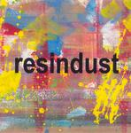

| Artist: | Resindust |
| Title: | Resindust |
| Label: | self produced rdcd001 |
| Length(s): | 52 minutes |
| Year(s) of release: | 2002 |
| Month of review: | [03/2005] |
| 1) | Windscream | 10.38 |
| 2) | Wireweave | 3.15 |
| 3) | Artism | 4.39 |
| 4) | Vorpmix | 11.10 |
| 5) | Suzanna | 3.16 |
| 6) | Resindust | 4.58 |
| 7) | Cotlife | 4.08 |
| 8) | Critical | 8.50 |
Wireweave is based on guitar instead. This a minimal track with repetitive phrases of guitar in both my ears. My guess is that this is weaving of wires in progress. A subtle piece. Later on, keyboards set in, and a distorted electric guitar. I don't think that I favour that idea. Maybe they could have just let it be.
Artism is built on vocals and Aphex Twin like rhythm effects. The vocals are rather weirdly sung and used to construct a song. More a listening experience than something one likes listen to. Still, it does have its charm, although I can understand people finding it irritating. Guys like Godley and Creme could have come up with something like this. To deride to all posh art critics, it seems.
We have arrived at the second ten plus minute tune, Vorpmix. Noisy guitars and keyboards set a somber, threatening mood. The amount of noise is rather high on this one, and the guitar playing rather occasional making for a chaotic, arbitrary mish-mash. Then the sequencers set in and we get a cleaner sound. Powerful chords on guitar and bass remind of Floyd's One Of These Days. Then we move into Frippian soundscapes territory, flowing into a jazzy guitar sound.
In comparison with the other titles, Suzanna sounds like something really different. It is in fact a sunny tune with vague vocalizations, in the style of Artism, but soothing and friendly. The accompanying guitars attest to this.
Resindust is another soothing piece in which guitars, mainly acoustic play the leading role. Anthony Philips and Mike Oldfield are easy reference points, in a minimal mood that is. It has a bit the same atmosphere as Marillion's Easter (in fact, the instrumental side of that song has strong similarities to this one). Cotlife is another such soothing piece with subtle work on the strings. A fragile piece of work.
Critical closes down the album, and opens with the tinkling of bells. The vague guitar excursions remind of Fripp's solo work. Feels a bit empty to me.